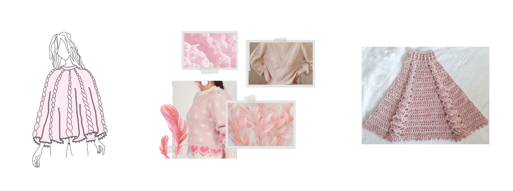

¿Cómo publicar diseños en revistas?
En esta entrada os voy a contar cómo puedes llegar a publicar un diseño tuyo en una revista especializada de punto o de ganchillo.
En muchas revistas es un proceso abierto, en el que cualquiera puede mandar su idea. Y si les parece lo suficientemente buena,
te encargarán que tejas y escribas el patrón de ese diseño y te pagarán por ello. Da igual si no tienes mucha experiencia,
si no te conoce mucha gente... dan oportunidad a diseñadores noveles.
Ahora bien, estos procesos sólo los he visto en revistas internacionales, que trabajan en inglés. Hasta donde yo sé, en España no se
siguen estos procedimientos tan abiertos, así que un requisito indispensable es que te manejes con el inglés.
¿Cómo empieza todo?
Cada cierto tiempo las revistas abren convocatoria para recibir propuestas de diseños para próximas publicaciones. Todas
las revistas trabajan con bastante antelación, suelen ir desde los 6 meses al año de antelación.
Por ejemplo, Crochet Now y Knit Now suelen trabajar a 6 meses vista y trabajan por estaciones (en invierno abren la convocatoria de verano, en primavera la de otoño...).
Así que más o menos cada 3 meses van a abrir una convocatoria.
Estas convocatorias se llaman Call For Submissions y para enterarte de cuándo son, las revistas ponen a disposición listas de correo. Aquí te dejo algunas:
Pom Pom ,
Crochet Now y Knit Now ,
Making Stories ...
En estas Call For Submissions las revistas te muestran la inspiración que tienen pensada para el número en cuestión. Lo suelen hacer a través de un moodboard
en un tablero de Pinterest y, por supuesto, de un texto explicativo dándote pistas de lo que están buscando.
Si te inspira lo que ves y te vienen a la cabeza miles de ideas... es el momento de ponerte a trabajar y preparar tu submission
Preparar tu Submission
En cada convocatoria vendrá muy bien indicado lo que sí o sí no puede faltar en tu submission que suele ser:
- Inspiración
- Boceto
- Descripción de la prenda (o accesorio)
- Foto de la muestra
- Ideas de lana
Manos a la obra
En esta entrada ya te hablamos de todo el proceso que seguimos a la hora de diseñar, en concreto de cómo hacer un moodboard, del boceto y de la muestra. Todo es aplicable aquí, así que para no repetirnos, simplemente, voy a destacar algunas particularidades que tienes que tener en cuenta cuando mandas una submission.
A la hora de contar y mostrar la inspiración yo suelo apoyarme mucho en la inspiración que propone la revista. Suelo incluir alguna de sus fotos en mi moodboard y usar alguna de las palabras que ellos usan al describir la prenda. Esto lo hago para enfatizar que he pensado el diseño siempre con su idea en mente. A la hora de hacer la muestra, intento hacer muestras muuuy generosas, esto es, más grandes que de costumbre, y siempre que tenga sentido con el diseño intento tejer en la muestra las partes clave. Por ejemplo, incluyendo aumentos y disminuciones para mostrar la forma, tejiendo el borde, tejiendo la variación del motivo que esté haciendo, etc. Igualmente, en la parte de la descripción de la prenda siempre intento dar muchos detalles de la construcción, para que se puedan imaginar el resultado final lo mejor posible. Por último, al hablar de la lana, es importante que transmitas conocimiento por el tipo de fibra que le iría bien a tu diseño, no sólo basta que lo nombres, si no es deseable que expliques el porqué y las características concretas que buscas en la fibra.Tienes que ser capaz de que con todo el conjunto de la submission, tu idea esté clara, y si no te la cogen que sea porque no les cuadra, pero no porque no hayas sabido transmitirla.
Sé realista
Las revistas son muy inclusivas en cuanto a tallas, incluyendo un amplio rango de contorno de pechos. A la hora de pensar tu diseño, te recomiendo encarecidamente que pienses bien cómo lo tallarías y si serías capaz de adaptarlo a 9 tallas. También te tienes que asegurar que serás capaz de escribir el patrón de una manera más o menos compacta, ya que el espacio en una revista es limitado. Es mejor que le dediques tiempo a la hora de plantear tu diseño y que no te veas en una situación en la que te cojan la propuesta y no sepas cómo sacarla adelante.
Enviada... y ahora ¿qué?
Tendrás que esperar unos días hasta que te envíen un correo diciéndote si te han seleccionado. Si es así ¡Enhorabuena! La sensación al recibir un correo diciéndote que sí es maravillosa, a disfrutar del momento y a trabajar :) Si no te cogen, no quiere decir que tu diseño no sea bueno, quizás no era lo que estaban buscando para ese número en concreto o justo mándaste un chal y recibieron muchos chales del mismo estilo, ¡Nunca se sabe! Tienes varias opciones para aprovechar lo trabajado, puedes darle una vuelta al diseño y mandarlo para otra submission. O también puedes ponerte a tejer y sacar el patrón por tu cuenta, ya tienes muuucho camino hecho al haber pensado y re-pensado el diseño.
Mi experiencia personal?
Descubrí este mundo hace poco más de un año y en este tiempo me han publicado tres diseños. Me gusta esta manera de publicar, porque siento que el proceso de mandar la submission saca lo mejor de mí como diseñadora y en el proceso de escribir el patrón y trabajar con la editorial aprendo muchísimo. Al final de todo es mucho trabajo, pero creo que está debidamente recompensado. Así que espero que este post te ayude y sí a raíz de él, te animas a preparar tu primera submission, ¡¡espero que me lo cuentes!!
P.D: Aquí te dejo la submission que mandé para mi último diseño publicado, para que te hagas una idea de los tiempos, mandé la idea a principios de verano, la tejí a finales de verano y la han publicado en invierno.